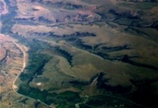
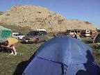
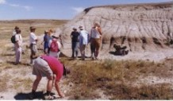
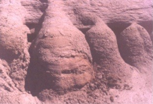
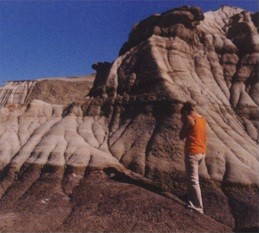
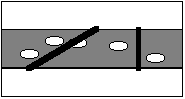
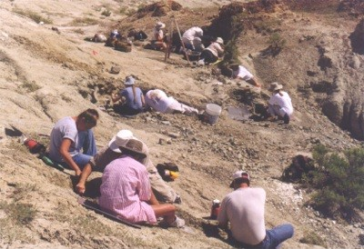

| Feature Article - September 1999 |
| by Do-While Jones |
The web page did say something about an upcoming dinosaur dig. As luck would have it, there was just one opening left for the July 20 - 26, 1999, session. I took it. ("I" rather than "we" because it would have taken more than half of Science Against Evolution's annual budget for the trip, so I went using my own personal funds. None of your contributions were used for my summer vacation.) So, in keeping with a long-standing September back-to-school tradition, here is my essay on, "What I Did On My Summer Vacation."
If you look at the extreme left edge of page 88 of DeLorme's Montana Atlas and Gazeteer, you will see Lincoln's field at 3,000 feet above sea level. Go straight east to the extreme right edge of page 89, and you will find elevations between 2880 and 2970 feet. Since the distance from the left of page 88 to the right of page 89 is about 75 miles, there is about a 100 foot drop in average elevation over about 396,000 feet. That's an average slope of 0.015 degrees. That's flat. No wonder it looks so remarkably flat from the air.
| But gouged out of this flat land are coulees, the bottoms of which are around 2000 to 2400 feet above sea level. I tried to take a picture of them through the window of the airplane. The sun wasn't in a very good position, the window was dirty, and two-dimensional photography doesn't show the features very well, but here is how the picture turned out.
These very narrow canyons, 600 to 1,000 feet deep, are obvious signs of erosion. One can't help but wonder, "Where did the water come from? Where is the watershed?" The land around them is absolutely flat. |
 |
Our canyons, here in the Mojave Desert, have mountains around them. It doesn't take a geologist to realize that when it rains to the west of us, the Sierra Nevada Mountains are going to funnel the water into the canyons, and it is going to wash out over Highway 14. There is an obvious watershed. When it rains in town, the intersection of Bowman Road and China Lake Boulevard is going to turn into Bowman Lake because all the water that falls on College Heights is going to flow down hill and end up there. There is an obvious watershed.
But Montana isn't like our desert. Half of the fields aren't cultivated. I asked a Montana farmer why, and he explained that the crops take so much water out of the soil, that crops won't grow a second year. They have to leave half their fields fallow every year so that they will absorb what little rain they get. They don't worry about erosion from run-off. There isn't any.
| I almost went into shock when I saw where MSUN had set up our camp. They set up in the bottom of a coulee, as close to the water as the mosquitoes would allow. (Sometimes the mosquitoes weren't that generous, but that's another story.) Nobody in their right mind would set up camp in a corresponding location in one of our canyons. It would be asking for a flash flood to wash them away. |  |
But this is the same spot MSUN has camped for the past 9 seasons, without any trouble. It did rain on the afternoons of July 21 and July 22, but the dreaded wall of water didn't materialize. There was a little trickle, perhaps a quarter of an inch deep, running through the low point of camp. We were in no danger.
Look carefully at the first photograph and maybe you can see that people have built houses and roads in the bottom of the coulee. They would not have built there if there was danger from flash floods.
Clearly, the current amount of rainfall could not carve canyons 600 feet deep. Many of the coulees do have small streams running in the bottoms of them. These streams are only 1/10 the width of the coulee, and meander slowly through them. In some places they may be eroding the coulee bottom a little bit, but for the most part, the coulees are slowly filling with silt. There must have been a whole lot more water running through the coulees some time in the past to carve them out the way they have been carved.
This isn't controversial. Geologists generally agree that there were huge ice age lakes in Montana. It is widely accepted by geologists that one lake to the west of the mountains in Montana, Lake Missoula, drained rapidly across eastern Washington into the Columbia River Gorge, creating Grand Coulee and other scabland features. There is little doubt that the coulees in northern Montana were also created by the drainage of lakes through the Missouri River.
The controversy is confined to the issue of when the drainage happened. Evolutionary geologists would say it happened 15,000 to 70,000 years ago. Creationists would say it happened about 3,000 to 4,000 years ago. How can you tell if the coulees are 3,000 or 15,000 years old?
 |
Near the top of one of the coulees we found this interesting geologic structure.
It is a sandbar that was deposited near the top of a coulee. This would have happened during the last stage of drainage, when water was still flowing through most of the width of the coulee. This sandbar developed on the inside bend of a curve in the coulee. It shows classic sandbar layering. |
 |
But after water stopped flowing down the coulee, rain on the top of the sandbar caused sand from the top to be eroded and deposited at the bottom. This caused the fan-shaped protrusions shown at the left.
If you look closely above and between the fans you can see the original (almost) horizontal grain of the sandbar. But the fans themselves show scalloped deposits that sag slightly. |
Imagine what the sandbar will look like ten years from now. The top of the sandbar will be lower, and the fans will stick out farther. What must the sandbar have looked like ten years ago? It must have been higher, and the fans not so pronounced. Right after the water stopped flowing, there would not have been any of those fans at all.
I failed to measure how far the fans stick out, but my recollection is that they must be about 9 inches out from the bottom of the sandbar at the base.
So, how long have those been there? We could guess if we knew how rapidly those fans grow. Nobody has been measuring them for years, so we don't know for sure. But we can make a ballpark guess.
The paper for our printer comes in packages of 500 sheets. Each package is 2 inches thick. Therefore, 1000 sheets would be 4 inches. Each sheet must be 0.004 inches thick.
Suppose the fans grow the thickness of one sheet of paper (0.004 inch) per year. If those fans really do stick out 9 inches, then they would be 2,250 years old.
Suppose the fans grow the thickness of one sheet of paper per year, and have been growing for 15,000 years. Those fans would be 60 inches (5 feet).
I admit that I didn't carefully measure how far out those fans extend, but you can see from the picture they are much closer to 1 foot than 5 feet. So, even though we don't have exact measurements, reasonable estimates of sizes and rates demand that the sandbar be closer to 3,000 years old than 15,000 years old. This means that the rapid erosion event that formed the coulee probably happened about 3,000 years ago.
|
The coulees cut grooves roughly 700 feet deep in the otherwise flat Montana landscape. These groves expose 700 feet of uniform layers. That is to say, there are different colored bands of rock along the coulee walls, as shown in the picture at the right. These colored bands tend to be uniform thickness that can be seen stretching over areas that are tens of miles. They are everywhere there are coulees, and it is reasonable to assume that they also exist where there don't happen to be coulees that allow them to be seen. Evolutionists and creationists agree that these bands of rock are sedimentary layers that were laid down under lots of water that covered most, or all, of Montana. |
 |
Evolutionists believe that, roughly 75 million years ago, there was a huge inland sea that covered the Great Plains of the U.S. In effect, the Gulf of Mexico shoreline moved all the way up into Canada, from the Mississippi River to the Rocky Mountains. They believe that sediment accumulated slowly, fractions of an inch per year, over millions of years.
Evolutionists believe that the coastline of the sea that covered the Great Plains occasionally moved back and forth from Louisiana to Canada, laying down a different kind of layer of sediment each time. The coastline receded whenever the land was uplifted. Whenever the land dropped, the sea came back and covered Montana again. So these layers represent different eras of geologic time.
Evolutionists claim that, "The present is the key to the past." Where in the world do we presently observe tides that rise and fall 3,000 feet, causing the shoreline to move back and forth 1600 miles? What would make evolutionists believe that this ever happened? We don't know.
Creationists, on the other hand, believe that most of these layers were created by Noah's Flood. We have seen modern evidence, particularly at Mount St. Helens, that flooding can produce many feet of layered rock in a single day. So it is consistent with modern scientific observation that if a flood suddenly covered the Great Plains of the United States, it would leave the layered deposits that we actually do find.
Dinosaurs are important because they can help us determine which geologic interpretation is more plausible. The hadrosaur eggs (and turtle eggs) being excavated by MSUN are particularly important in this respect. The question is, "Were the dinosaur eggs buried at the same time as the layer was formed? Or were the eggs laid later in an existing layer?"
Conventional (evolutionary) geologists assume that the eggs were buried as the layer was forming. They believe that both the eggs and the rock layer containing them were created 75 million years ago. We believe there is a serious problem with that notion.
Conventional wisdom says that sedimentary rock layers are deposited slowly on the bottom of a lake, sea, or ocean. Turtles don't lay their eggs on the bottom of the ocean. Sea turtles come to the shore, dig a nest near the water's edge, and lay their eggs there. It seems unlikely to us that a dinosaur would swim 10 or 20 miles out to sea, dive down to the bottom, and lay her eggs there.
Suppose, on the other hand, that the waters that once covered the Great Plains rushed in suddenly over the land. Suppose these flood waters laid down the layers of sedimentary rock that now cover Montana in a matter of a few months. We have observed a similar phenomenon at Mount St. Helens, and repeatable sedimentation experiments done in hydrodynamic laboratories have helped us to understand why flood waters lay down stratified layers similar to those in Montana.
Suppose that as the flood waters receded from Montana, they carved the coulees on their way to the Missouri River. Then, during a subsequent ice age, the coulees partially filled with water forming lakes.
There is nothing unscientific or unreasonable about this scenario. Geologists generally believe that the precipitation levels during the ice age were higher than they are today. (There isn't enough snow today to cause an ice age. That's why we aren't having one now. So, it must have snowed harder during the ice age.) If there was more snow, there would be more rain, too.
Right after the coulees were carved, they would have very steep, unstable walls. It is very likely that some of these walls would collapse. If they did, they would form natural dams in the bottom of the coulees, which would cause the coulees to partially fill with water, forming natural lakes. In fact, the coulee near Havre, Montana, through which the Milk River flows, has been artificially dammed up to create the Fresno Reservoir.
If these coulees were lakes, hadrosaurs (duck-billed dinosaurs) probably would have liked to live near them. They probably would have laid their eggs in the moist, soft sand at the shores of these lakes. If there were unusually heavy rains, or if global warming caused glaciers to melt more rapidly, the levels in these lakes may have risen so much that the eggs were drowned. Or, perhaps the dam gave way and the lake drained, causing the soft sand to become hot and hard, cooking the eggs in place.
It is a plausible theory, but is it true? How can we tell if the eggs were buried when the layer formed, or if the dinosaur dug a nest in the layer and laid them later? There is a way to tell.
Suppose the eggs were buried when the layer formed, before the coulee eroded part of the rock away, exposing the eggs. Then, the normalized probability of finding eggs in that layer of rock would be the same at steep coulee walls as it would be on the gently sloped fringes of the coulee.
|
 |
First, we must explain what we mean by "normalized" probability. Let the diagram to the left represent a layer of gray rock containing randomly distributed eggs in it, surrounded by two layers of white rock. |
If we cut diagonally through the layer, we cut through more rock than we do if we cut through vertically, increasing the chances that we will hit an egg. In the diagram above, the left line cuts through the layer at approximately 30 degrees, making it cut through twice as much of the layer as the vertical line. So, for those layers that are cut at a 30 degree angle we would expect to find twice as many eggs per square foot as we would find in vertical walls.
But if the dinosaurs laid their eggs after the coulee was formed, you would expect to find the eggs only on the sloping shores, not on the vertical side walls of the coulee.
|
We found eggs along what would have been a gently sloping shore line if water had filled the coulee up to that bush at the right side of the picture. We did not find eggs in vertical walls. To be honest, we didn't find any eggs in vertical coulee walls because we didn't look there. But we didn't look there largely because the leader has been working this coulee for 9 years and knows where to look. |
 |
If dinosaur eggs and dinosaur bones were buried in the layers before the coulees cut through them, some bones should have been sticking part way out of the coulee wall. Pieces of bone would have fallen out and landed in a pile at the bottom of the cliff, and we would have known to look higher up the cliff for the bones. (In fact, something very much like this happened last week on an unrelated geology field trip to eastern Washington. We were examining a vertical basalt cliff when someone noticed small pieces of green chert at the bottom. We looked higher up the cliff face and found a very large chert deposit in a dike in the basalt.) If there had been pieces of eggshell and bone fragments at the bottom of vertical coulee wall, we probably would have noticed them.
So, the location of the eggs seems to indicate that the eggs are younger than the coulees. The coulees are certainly younger than the layers. So geographical considerations argue that the eggs were laid at about the time of the ice age.
Creationists believe the ice age was about 3,000 to 4,000 years ago. Evolutionists generally believe in several ice ages tens of thousands of years ago. But even if you accept the evolutionists' date for the ice ages, that would mean that hadrosaurs were laying eggs less than 70,000 years ago. That doesn't fit with an evolutionary model that says dinosaurs died out 60 million years ago.
Another thing that doesn't fit is the length of this essay. We are only half done, and our six-page newsletter is already eight pages long. So, we will have to continue the story next month.
| Quick links to | |||
|---|---|---|---|
| Science Against Evolution Home Page |
Back issues of Disclosure (our newsletter) |
Web Site of the Month |
Topical Index |